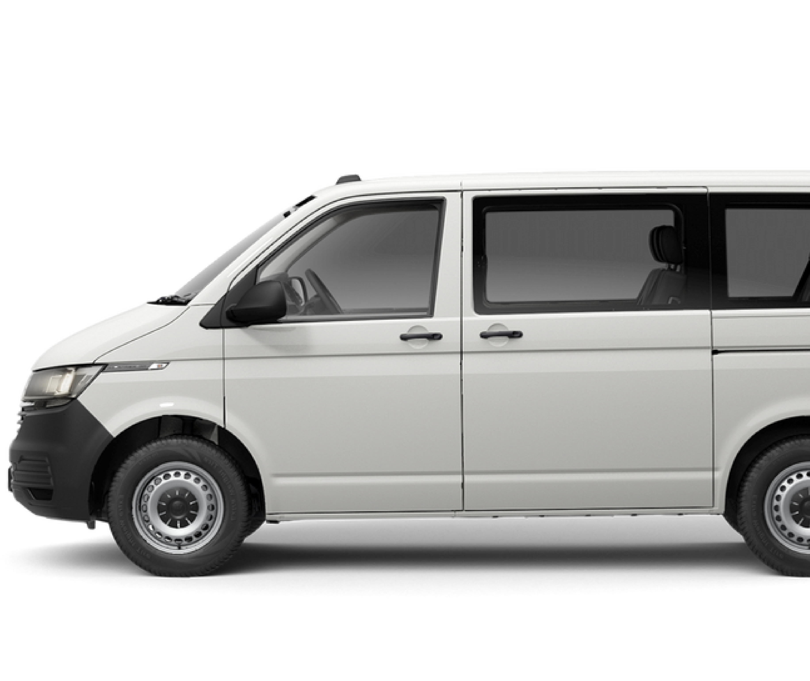
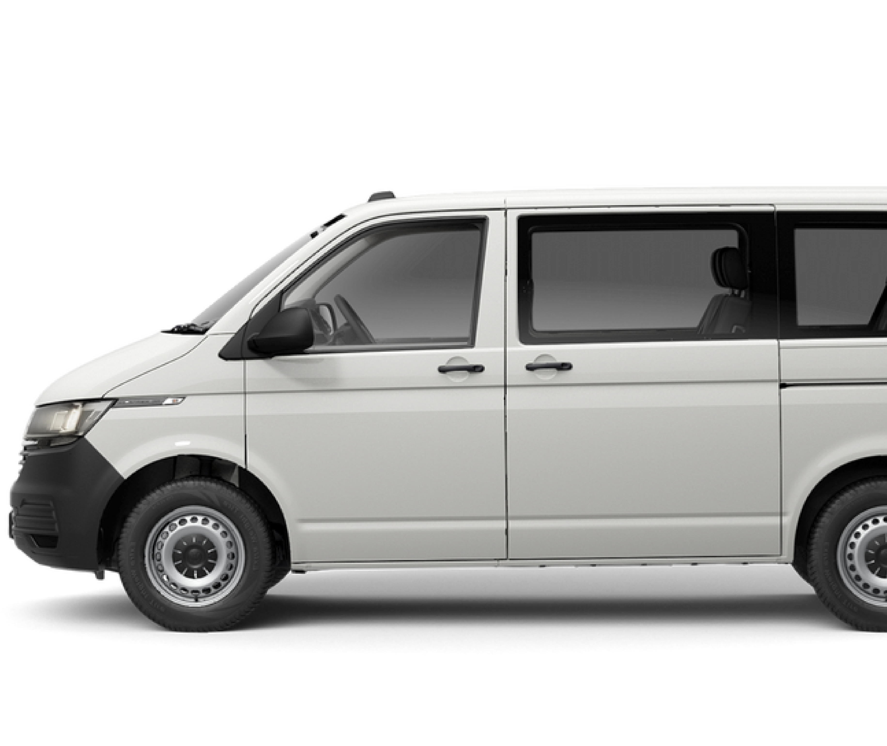

1990
4th Generation
4th Generation
 

For 1990, the T4 generation was released, with the model range dropping the Type 2 name in favor of the Transporter nameplate. Over 15 years after the Golf was introduced as the replacement for the Type 1 (Beetle), the Transporter range also adopted a front-engine, front-wheel drive configuration (Syncro 4WD returned as an option). Worldwide, the model range now used water-cooled, fuel-injected engines, with inline (and later VR6) engines replacing the "wasserboxer".
Through much of the world, the T4 was marketed as the Transporter, with 3-row passenger vans known as the Caravelle; the Vanagon name was used in Japan. In the United States, the T4 was marketed as the Eurovan mid-size van for 1993 and from 1999 to 2003; from 1995 to 2005, the Eurovan served as the basis for multiple recreational vehicles marketed through the United States and Canada. Sales of the Transporter in North America ended in 2003.